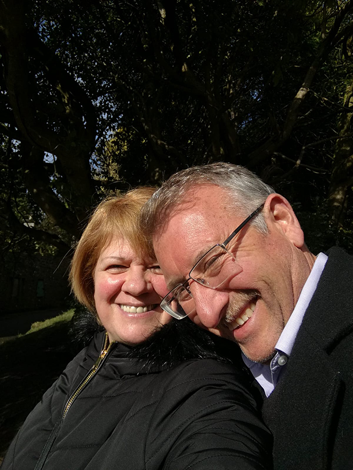
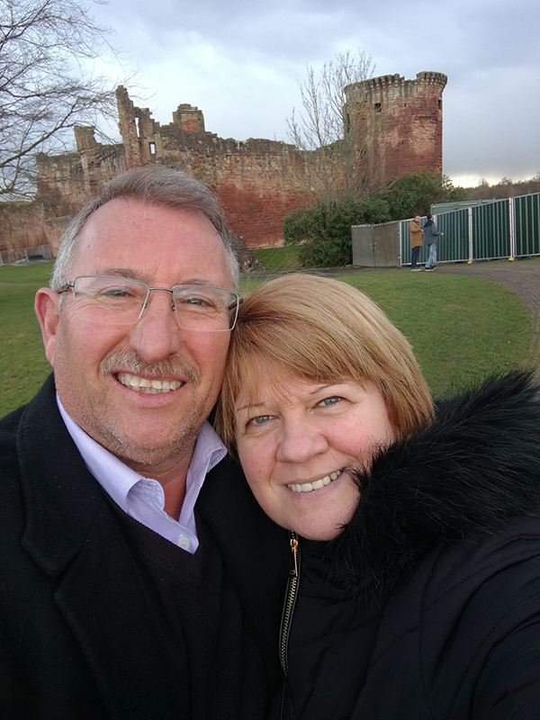

Gracias por visitar nuestra web.
Hemos estado juntos desde principios de los 80 y hace unos 30 años empezamos nuestra primera (y más grande) colección, ¡los dedales!
Hacia mitad de los 90, el sueño de Silvia de tener una casa de muñecas clásica se hizo realidad cuando empezamos un kit para construir una.
Hemos construido 4 de nuestras casas con kits que nos enviaban por fascículos a casa; cada mes nos llegaban algunas piezas.
Una vez teníamos todas las piezas, empezabamos la parte divertida de montarla.A lo largo de los años hemos visitado ferias para mejorar nuestras casas.
La quinta casa de muñecas nació de nuestra pasión por esta afición y del convencimiento de que podíamos contruirla desde cero.
